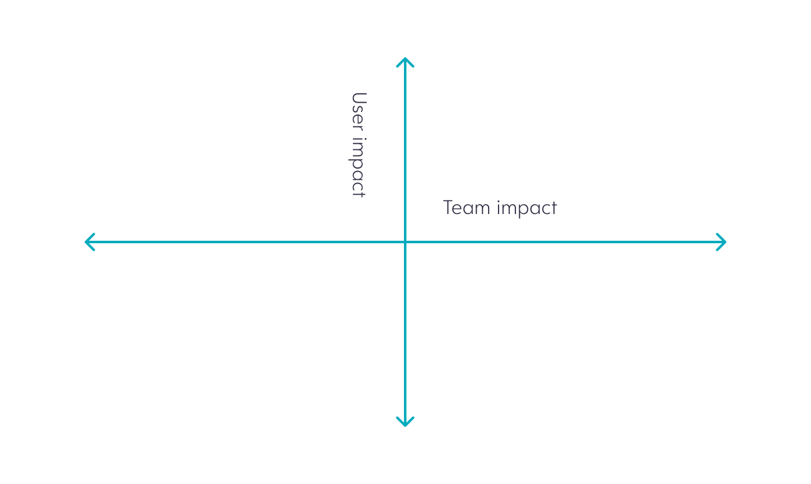

Simeji

- RoleDesigner
- TeamBaidu Japan
- Sitesimeji.me
- AwardApple Apps of the Year
- InterviewCNET (Japanese)
Simeji is an IME
that provides unique communication ways for the users.
For example, it provides cloud based text predictions whereby the
dictionary was updated over time based on user trends.
It was initially developed for Android and had over 10 million users
by 2014. In 2014, the newly introduced iOS 8 accepted 3rd party IME
and so we developed and released the iOS app within 3 months. Accordingly the design challenge
at the iOS app launch was not only to design the UI with its core value proposition for the
new market, but also to encourage the team to meet the target launch day that had been announced
worldwide. In the following year, we updated the Android design to adopt Material Design.
With design analysis, we included following idea evaluations for the final design decisions:
- A/B testing
- Cross section online form data analysis
- Focus group interviews
- User interviews
- User behaviour data analysis
Before

After

When we adopted the Material Design, we analyzed the design issues in the application. One of the biggest issues we tried to solve was the main input key character legibility.
Android

iOS

To released the iOS version within 3 months during 2014, we selected features carefully, considering its strength in the market and its development cost.
Android

iOS

We updated the information layout for the each target platform. We considered the platform design guideines and default navigation bar position to update our layout guidelines.
Android

iOS

We kept the brand color, but reorganized the overall color palette for the target platforms. Also we started to use the flat colors instead of gradation.
Advertising Week

- RoleDesigner
- TeamBaidu Japan
- SiteAdvertising Week
- VenueRoppongi Midtown
Advertising Week is a world wide event for the marketing, advertising, and technology industries. It takes places
in New York, London, and Tokyo.
Serving over 600 million users as a search engine in China, Baidu, Inc. participated in Advertising Week Asia to
support discussion about innovation and culture. Co-working with the event organizers, architects, sound artists, and printers, I directed experience
design for visitor to the space that dedicated for the company.
Accounting software
- RoleDesigner, Product manager
- TeamKPMG
KPMG is a global professional service firm which service includes audit, assurance, and
taxation. Hence the firm was looking for a solution to process the financial evidence data
accurately based on the accounting rules.
Standing between business team and engineer team as a designer and later as a product
manager, my challenge have been organizing data flow and user flow that are clear for these
stakeholders.
Over the years, the team grew from a few members to over 30, including the teams of
designers, software engineers, machine lerning engineers, and data scientists.
The Urban Grocer
- RoleDesigner, IA, Illustrator
- TeamThe Urban Grocer
- E-bookThe Urban Grocer’s Guide
The Urban Grocer’s Guide to Urban Eating is to help food savvy users find the restaurants that appeal to them. The evaluation included the user research about what appeal to the foodies.
The design challenge was to provide easy navigation to a food savvy audience.
Persona

Site architecture